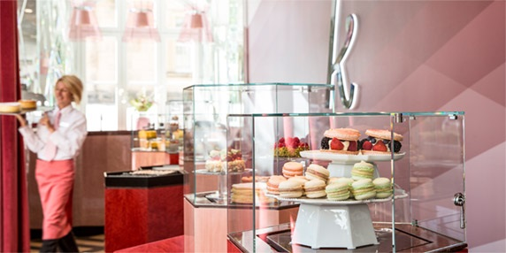
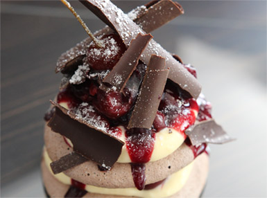
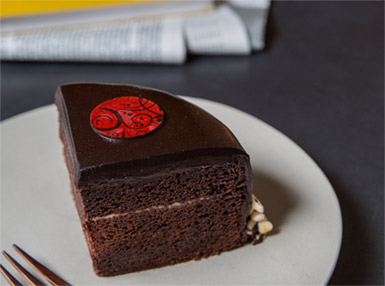
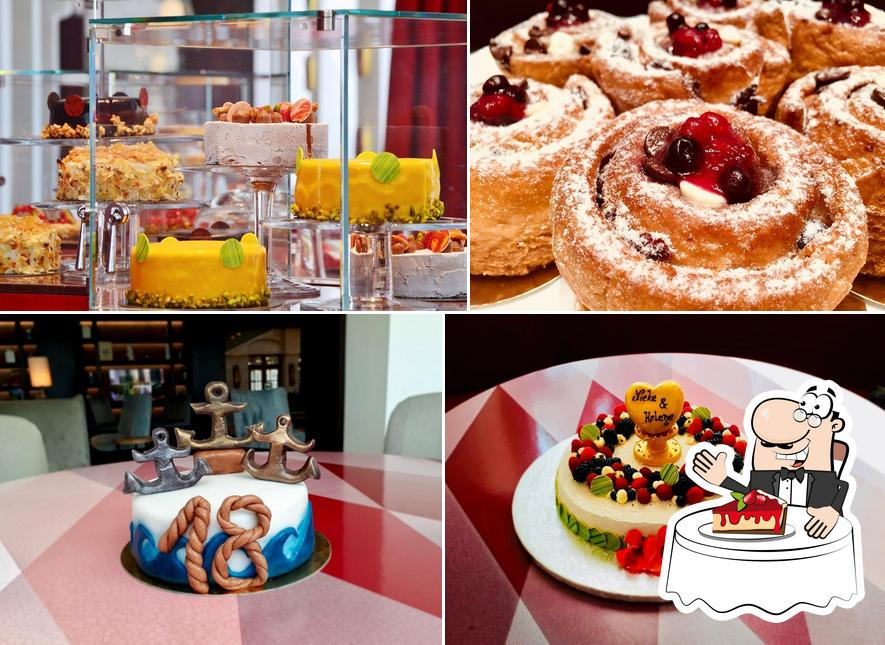

Mein Praktikumsbetrieb
Meine Erwartungen an mein Praktikum
Ich erhoffe mir, dass ich viel praktisch arbeiten darf und auch mal selbst eine Aufgabe ueberwaltigen darf. Ich denke jedoch das ich die Drecksarbeit bekomme
Allgemeine Informationen
- im Gewandhaus
- Dirk Guenther, Chef Patissier
- Ringstrasse 1
- 01067 Dresden
- Tel.: +49 (0)351 49 49 69
- d.guenther@kuchenatelier.com
- Oeffnungszeiten 13:00-18:00 Uhr
Was macht mein Praktikumsbetrieb?
- Das Kuchenatelier Dresden ist von Mittwoch bis Sonntag von 13:00-18:00 geöffnet
- sie verkaufen alles was mit Kuchen und Kaffe zu tun hat
- Die Kuchen sind alle selbstgemacht.
- In der Backstube stehen 3 Leute die taeglich fuer neuen genuss sorgen.

Beispiele für kuchen die man bei dem Kuchenatelier kaufen kann:



Weitere Infos zu meinem Praktikum